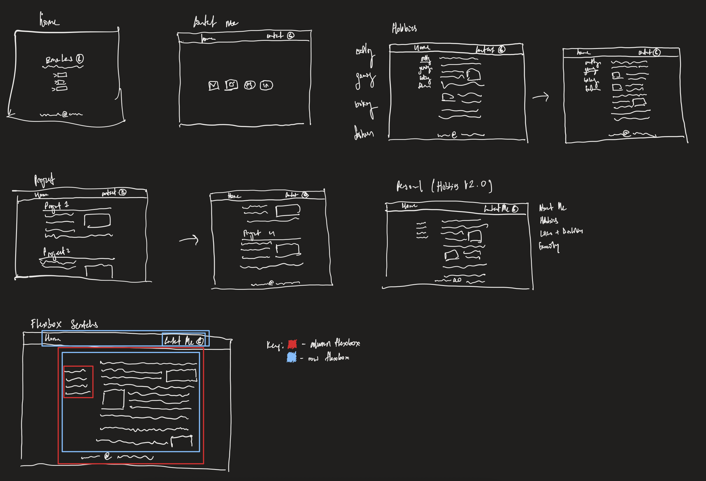

During my CSE 333 class, Systems Programming, we were required to implement a file index
search engine. This project is where I would easily spend the majority of my time, giving me
some of the most rewarding and also frustrating moments of the year. We were given scaffold
code -- class interfaces, header files, and a test harness -- while I implemented all the
underlying logic. The project was split into four layers. First came the foundation where I
wrote my own data structures, custom hash tables and linked lists, to help store the results
of the next layer. I built a crawler that walked through a folder of text files and read every
word inside them, storing which document ID a word appeared in, and where (a hashmap used
to map words to their information, and linked lists to store the information blocks).
The end result was an inverted index, a big lookup table that instantly tells you which
documents contain a given word. Learning that Google runs on the same fundamental idea left
quite an impression on me, and left me feeling like I was doing something truly applicable
to modern day tech.

Now, crawling the files before each query would take an unreasonable amount of time, so I saved the index to disk instead of keeping it in memory. This meant designing a custom binary file format from scratch -- deciding exactly which byte in the file holds which number, which word, which offset pointing to the next piece of data. One of the trickiest parts was accounting for endianness, the order of which different computers store bytes, so the file would read correctly no matter what machine opened it.
The last step was to bring everything together and present a functioning browser. A working web server that could handle multiple people searching at the same time, each request handled independently over raw network sockets and a pool of worker threads, without any of them causing race conditions. Typing a query and watching it travel to my own server, hit the index I'd built, and come back with ranked results in milliseconds was one of the most satisfying "it works!" moments of the whole class. (Especially taking into account the sheer amount of time poured into this project)
Of course there's the obvious personal project: this website! I only had a few concrete ideas for the general layout of my page before creation since I find that creativity comes a lot more naturally after I got my mind in action. After I created my homescreen, I knew the general aesthetic I wanted to carry out with for the rest of the project. If my choice of font was reminding you of something familiar... SURPRISE! I used Minecraft's chatting font! As mentioned in my Personal section I've played a few games before and when I committed to the notepad/text vibe of my site, I thought what better than to use such a nostalgic font?

To the left is some rough diagram I sketched out after figuring out the basics of my homepage. The drawings helped me break down the site into easily digestible elements to implement. One of the sketches I had the most fun with would be my Personal page. I really liked marking out all the different nested flexboxes I needed to use. There is joy in watching a vision form into reality through pure time and effort.
I used HTML, CSS, JS, and animated with @ keyframes in this project. It was really fun working on this and has definitely pushed Web Development into my scope of passions/interests!